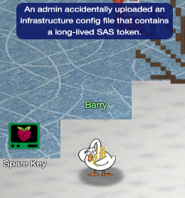

Spare Key

In the cloud, a single misconfigured container can quietly expose the keys to the kingdom. This challenge tasks us with hunting down a careless infrastructure leak in an Azure environment before the wrong person finds it.
Challenge Overview
The Neighborhood HOA has deployed a static website on Azure Storage for their community. Unfortunately, an administrator made a critical error by uploading an infrastructure configuration file alongside the public web content. We must identify this leak using the Azure CLI to secure the tenant.
1. Surveying the Landscape
🎄 Welcome to the Spare Key! 🎄
You're connected to a read-only Azure CLI session in "The Neighborhood" tenant.
Your mission: Someone left a spare key out in the open. Find WHERE it is.
Connecting you now... ❄️
Let's start by listing all resource groups
$ az group list -o table
This will show all resource groups in a readable table format.
We begin with a read-only Azure CLI session. The first step in any cloud assessment is establishing situational awareness. We list the resource groups to understand the tenant structure.
neighbor@585e2adb8f69:~$ az group list -o table
Name Location ProvisioningState
------------------- ---------- -------------------
rg-the-neighborhood eastus Succeeded
rg-hoa-maintenance eastus Succeeded
rg-hoa-clubhouse eastus Succeeded
rg-hoa-security eastus Succeeded
rg-hoa-landscaping eastus Succeeded
2. Locating the Storage Assets
Now let's find storage accounts in the neighborhood resource group 📦
$ az storage account list --resource-group rg-the-neighborhood -o table
This shows what storage accounts exist and their types.
The scenario hint points toward a website. In Azure, static websites are often hosted within Storage Accounts. We target rg-the-neighborhood to list the storage accounts contained within.
neighbor@585e2adb8f69:~$ az storage account list --resource-group rg-the-neighborhood -o table
Name Kind Location ResourceGroup ProvisioningState
--------------- ----------- ---------- ------------------- -------------------
neighborhoodhoa StorageV2 eastus rg-the-neighborhood Succeeded
hoamaintenance StorageV2 eastus rg-hoa-maintenance Succeeded
hoaclubhouse StorageV2 eastus rg-hoa-clubhouse Succeeded
hoasecurity BlobStorage eastus rg-hoa-security Succeeded
hoalandscaping StorageV2 eastus rg-hoa-landscaping Succeeded
3. Identifying the Static Website
Someone mentioned there was a website in here.
maybe a static website?
try:$ az storage blob service-properties show --account-name <insert_account_name> --auth-mode login
We need to confirm if neighborhoodhoa is configured to serve web content. We query the service properties to check if the static website feature is enabled. The 404.html and index.html properties indicate that it is indeed configured for static website hosting.
neighbor@585e2adb8f69:~$ az storage blob service-properties show --account-name neighborhoodhoa --auth-mode login
{
"enabled": true,
"errorDocument404Path": "404.html",
"indexDocument": "index.html"
}
4. Enumerating Containers
Let's see what 📦 containers exist in the storage account
💡 Hint: You will need to use az storage container list
We want to list the container and its public access levels.
With the static site confirmed, we list the containers. Azure static websites automatically use a
specific container named $web to host content. We check the containers and their public
access
levels.
neighbor@585e2adb8f69:~$ az storage container list --account-name neighborhoodhoa --auth-mode login
[
{
"name": "$web",
"properties": {
"lastModified": "2025-09-20T10:30:00Z",
"publicAccess": null
}
},
{
"name": "public",
"properties": {
"lastModified": "2025-09-15T14:20:00Z",
"publicAccess": "Blob"
}
}
]
5. Hunting for Anomalies
Examine what files are in the static website container
💡 hint: when using --container-name you might need '<name>'
Look 👀 for any files that shouldn't be publicly accessible!
We examine the contents of the $web container. While we expect HTML files, we are
looking for
anything that looks like an infrastructure configuration file that was uploaded by mistake. The
presence of a file named iac/terraform.tfvars is a red flag, as it contains sensitive
configuration details. It should never be in a public web directory.
neighbor@585e2adb8f69:~$ az storage blob list --account-name neighborhoodhoa --container-name '$web' --auth-mode login [ { "name": "index.html", "properties": { "contentLength": 512, "contentType": "text/html", "metadata": { "source": "hoa-website" } } }, { "name": "about.html", "properties": { "contentLength": 384, "contentType": "text/html", "metadata": { "source": "hoa-website" } } }, { "name": "iac/terraform.tfvars", "properties": { "contentLength": 1024, "contentType": "text/plain", "metadata": { "WARNING": "LEAKED_SECRETS" } } } ]
6. Exfiltrating the Secret
Take a look at the files here, what stands out?
Try examining a suspect file 🕵️:
💡 hint: --file /dev/stdout | less will print to your terminal 💻.
We download the suspicious Terraform file to inspect its contents. Inside the file, we find the "Spare Key" we were looking for.
neighbor@585e2adb8f69:~$ az storage blob download --account-name neighborhoodhoa --container-name '$web' --name 'iac/terraform.tfvars' --file /dev/stdout --auth-mode login | less # Terraform Variables for HOA Website Deployment # Application: Neighborhood HOA Service Request Portal # Environment: Production # Last Updated: 2025-09-20 # DO NOT COMMIT TO PUBLIC REPOS # === Application Configuration === app_name = "hoa-service-portal" app_version = "2.1.4" environment = "production" # === Database Configuration === database_server = "sql-neighborhoodhoa.database.windows.net" database_name = "hoa_requests" database_username = "hoa_app_user" # Using Key Vault reference for security database_password_vault_ref = "@Microsoft.KeyVault(SecretUri=https://kv-neighborhoodhoa-prod.vault.azure.net/secrets/db-password/)" # === Storage Configuration for File Uploads === storage_account = "neighborhoodhoa" uploads_container = "resident-uploads" documents_container = "hoa-documents" # TEMPORARY: Direct storage access for migration script # WARNING: Remove after data migration to new storage account # This SAS token provides full access - HIGHLY SENSITIVE! migration_sas_token = "sv=2023-11-03&ss=b&srt=co&sp=rlacwdx&se=2100-01-01T00:00:00Z&spr=https&sig=1djO1Q%2Bv0wIh7mYi3n%2F7r1d%2F9u9H%2F5%2BQxw8o2i9QMQc%3D" # === Email Service Configuration === # Using Key Vault for sensitive email credentials sendgrid_api_key_vault_ref = "@Microsoft.KeyVault(SecretUri=https://kv-neighborhoodhoa-prod.vault.azure.net/secrets/sendgrid-key/)" from_email = "noreply@theneighborhood.com" admin_email = "admin@theneighborhood.com" # === Application Settings === session_timeout_minutes = 60 max_file_upload_mb = 10 allowed_file_types = ["pdf", "jpg", "jpeg", "png", "doc", "docx"] # === Feature Flags === enable_online_payments = true enable_maintenance_requests = true enable_document_portal = false enable_resident_directory = true # === API Keys (Key Vault References) === maps_api_key_vault_ref = "@Microsoft.KeyVault(SecretUri=https://kv-neighborhoodhoa-prod.vault.azure.net/secrets/maps-api-key/)" weather_api_key_vault_ref = "@Microsoft.KeyVault(SecretUri=https://kv-neighborhoodhoa-prod.vault.azure.net/secrets/weather-api-key/)" # === Notification Settings (Key Vault References) === sms_service_vault_ref = "@Microsoft.KeyVault(SecretUri=https://kv-neighborhoodhoa-prod.vault.azure.net/secrets/sms-credentials/)" notification_webhook_vault_ref = "@Microsoft.KeyVault(SecretUri=https://kv-neighborhoodhoa-prod.vault.azure.net/secrets/slack-webhook/)" # === Deployment Configuration === deploy_static_files_to_cdn = true cdn_profile = "hoa-cdn-prod" cache_duration_hours = 24 # Backup schedule backup_frequency = "daily" backup_retention_days = 30 { "downloaded": true, "file": "/dev/stdout" }
Challenge Reference Material
Challenge Descriptions
Classic Mode Description
Help Goose Barry near the pond identify which identity has been granted excessive Owner permissions at the subscription level, violating the principle of least privilege.
CTF Mode Description
The Neighborhood HOA hosts a static website on Azure Storage. An admin accidentally uploaded an infrastructure config file that contains a long-lived SAS token. Use Azure CLI to find the leak and report exactly where it lives.
Official Hints
- This terminal has built-in hints!